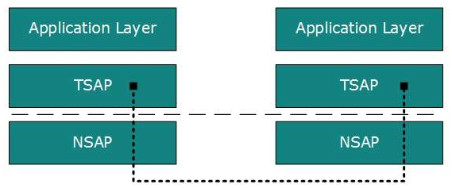

Transport Layer
Next Layer in OSI Model is recognized as Transport Layer (Layer-4). All modules and procedures pertaining to transportation of data or data stream are categorized into this layer. As all other layers, this layer communicates with its peer Transport layer of the remote host.
Transport layer offers peer-to-peer and end-to-end connection between two processes on remote hosts. Transport layer takes data from upper layer (i.e. Application layer) and then breaks it into smaller size segments, numbers each byte, and hands over to lower layer (Network Layer) for delivery.
Functions
- This Layer is the first one which breaks the information data, supplied by Application layer in to smaller units called segments. It numbers every byte in the segment and maintains their accounting.
- This layer ensures that data must be received in the same sequence in which it was sent
- This layer provides end-to-end delivery of data between hosts which may or may not belong to the same subnet.
- All server processes intend to communicate over the network are equipped with well-known Transport Service Access Points (TSAPs) also known as port numbers
End-to-End Communication
A process on one host identifies its peer host on remote network by means of TSAPs, also known as Port numbers. TSAPs are very well defined and a process which is trying to communicate with its peer knows this in advance.

For example, when a DHCP client wants to communicate with remote DHCP server, it always requests on port number 67. When a DNS client wants to communicate with remote DNS server, it always requests on port number 53 (UDP).
The two main Transport layer protocols are:
- Transmission Control Protocol
It provides reliable communication between two hosts.
- User Datagram Protocol
It provides unreliable communication between two hosts.
The transmission Control Protocol (TCP) is one of the most important protocols of Internet Protocols suite. It is most widely used protocol for data transmission in communication network such as internet.
Features
- TCP is reliable protocol. That is, the receiver always sends either positive or negative acknowledgement about the data packet to the sender, so that the sender always has bright clue about whether the data packet is reached the destination or it needs to resend it.
- TCP ensures that the data reaches intended destination in the same order it was sent.
- TCP is connection oriented. TCP requires that connection between two remote points be established before sending actual data
- TCP provides error-checking and recovery mechanism.
- TCP provides end-to-end communication.
- TCP provides flow control and quality of service
- TCP operates in Client/Server point-to-point mode.
- TCP provides full duplex server, i.e. it can perform roles of both receiver and sender.